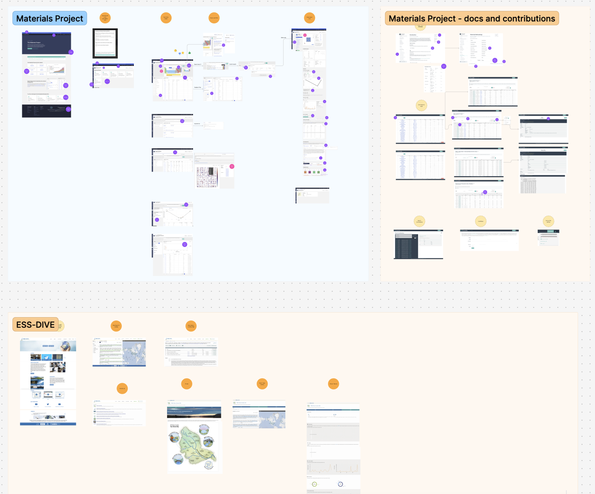

STRUDEL
A design system for scientific software
A set of high-level templates for designing and implementing user interfaces for scientific software, helping teams reuse established UX patterns rather than designing every interface from scratch.
Background
Finding common patterns across scientific software
Across scientific domains, researchers often use interfaces to perform similar tasks. They search and filter tabular data, configure computational codes, and monitor real-time experimental data. Yet many of these interfaces are developed as bespoke software.
I saw an opportunity to create reusable and customizable templates that could capture these common workflows and serve as starting points for new scientific UI projects.
I developed the idea in a white paper for a DOE workshop . The idea caught the attention of the Sloan Foundation, whose grant helped establish the STRUDEL project and assemble the team.
Research & Design
Developing the design system
We began by gathering examples from software projects across multiple scientific domains at LBNL and interviewing the teams behind them to understand the context in which the interfaces were used.
We clustered interfaces around similar tasks and quickly identified recurring workflow patterns. From these patterns, we designed templates that removed domain-specific details so they could be applied more broadly across scientific disciplines.
The resulting templates are published on the STRUDEL website as Figma resources, and several have since been implemented as React components.

Design System
STRUDEL Task Flows
Design systems can address many levels of detail, from what a button should look like to how a data table should behave. We chose to focus on a higher-level layer: the workflows users follow to accomplish their tasks, which we call Task Flows .
In our experience, this is often where scientific teams need the most UX guidance: determining how to structure an interface so users can effectively complete a task, rather than simply choosing individual UI components.

Design principle
Rather than prescribing the visual details of an interface, STRUDEL captures reusable UX patterns at the level where scientific teams often need the most help: structuring the workflow itself.
STRUDEL + AI
Helping scientists build their own interfaces with AI
Our overarching goal with STRUDEL was to empower scientists to create their own interfaces without needing extensive frontend development skills. Even after simplifying setup with configuration files and command-line tools, however, the skill gap remained too wide for many users.
This led us to experiment with AI coding agents as a way to bridge that gap. In October, we hosted a workshop on using AI with STRUDEL to develop scientific interfaces. More than 30 people participated in person, including people who had never written a line of code or used the command line.
Participants were able to accomplish substantially more in a single day than our previous workflows had made possible.

What we learned
Generative AI can create interfaces with very little starting structure, but workshop participants valued beginning with a trusted resource. STRUDEL provided guardrails and a transparent baseline, allowing users to work iteratively with the AI rather than relying on it to generate the entire experience from scratch.
Building a community of practice
An unexpected outcome was the sense of community that emerged as participants worked through how to integrate these new technologies into their work. People helped one another, shared approaches and experiences, and expressed interest in continuing to learn together.
Several participants wanted to join future workshops, participate in ongoing communities such as the US-RSE UX working group, and contribute back to STRUDEL.
Thoughts & Talks
Learn more about the STRUDEL Design System in my webinar “How to Build a Science UI: Getting Started with the STRUDEL Design System” .